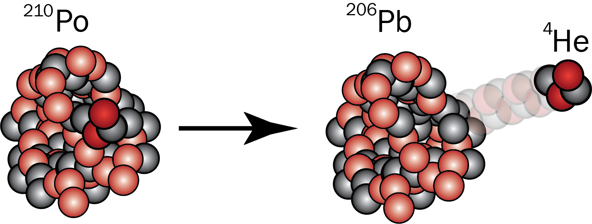

Massen til atomkjerner måles i \(\mathrm{u}\), som er definert ved
$$ 1\;\mathrm{u} = 1,660539 \cdot 10^{-27} \; \mathrm{kg} $$I en radioaktiv reaksjon ligger polonium-210 i ro og sender ut en helium-4-kjerne. Polonium-210 henfaller da til en bly-206-kjerne. Massene til partiklene, målt i \(\mathrm{u}\), er det samme som nukleontallet.
Farten til heliumkjernen er \(1,6 \cdot 10^{7}\) m/s.
Hvor stor fart får blykjernen?
